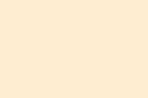
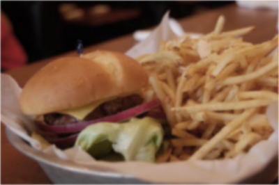
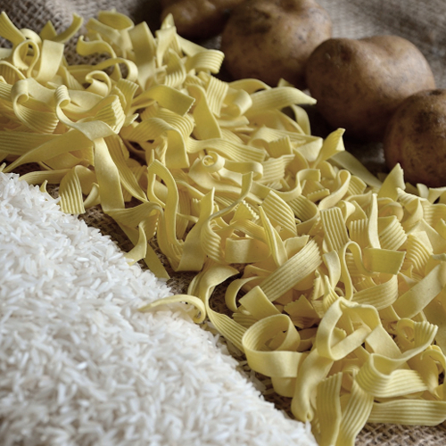
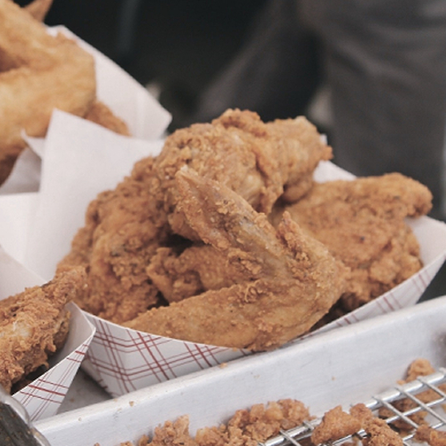
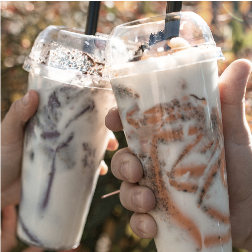

“Food you should
Prevent”

“Why not?
以下介紹的三種食物都是建議正在減重或是想養成健康飲食習慣的你，盡量少攝取的食物。雖然建議減少以下食物的攝取量，但有些營養還是必須的，過度的偏食反而會造成飲養不均衡並出現反效果喔！

碳水化合物
許多節食的人都知道，想保持身材苗條就要減少生活中「碳水化合物」攝取。如果攝入過多，它進入人體後所產生多餘的葡萄糖就會被轉化為脂肪，導致發胖。而那些常見的碳水化合物有饅頭、吐司、御飯糰、麵包、炒飯、炒麵、鍋燒麵、湯麵、等等。
油炸食物
油炸是一種特別受國人喜愛的料理方式，將食物放入滾燙的油鍋中使食材內的水份大量蒸發，並呈現金黃酥脆的美味顏色，然而油炸過程中，澱粉易吸收大量油脂。長期吃會使人攝取過多的熱量導致發胖。


含糖飲料
這是由於飲料中的糖比固體食物中的糖更易引起有害的代謝變化，導致肥胖、糖尿病等疾病。除了肥胖，這些高糖飲料將會導致提高三酸甘油酯、血糖和血壓水平，最嚴重會引發心臟疾病問題。